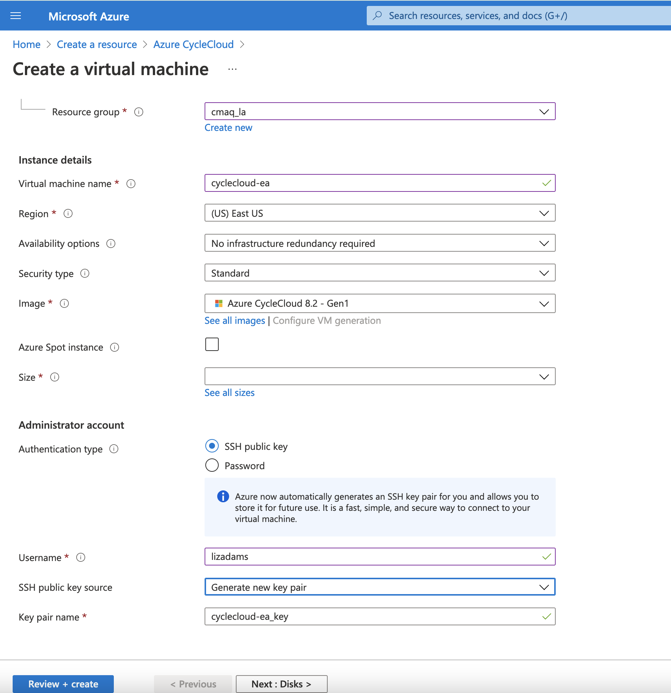
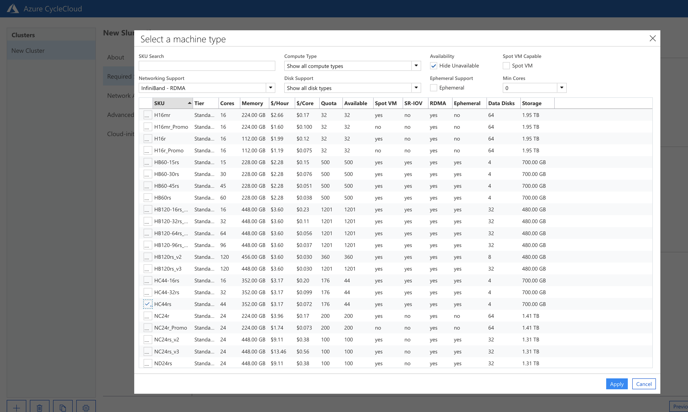

Create Cyclecloud CMAQ Cluster#
Documentation for Azure CycleCloud Documentation
Configure the Cycle Cloud Cluster using the Azure Web Interface#
Create a virtual Machine

Select a VM Size of D4s_v3
Screenshot of the setting selected
Selects Disks for the Azure Virtual Machine

Selects Network Interface for the Azure Virtual Machine

Create Virtual Machine Management Identity
Create Virtual Machine Management Identity - Screenshot 2
Create Virtual Machine Management Identity - Screenshot 3
Create a Virtual Machine

Add Contributor Role to Virtual Machine

Add Role Assignment - Management Identity

Add Role Assignment
Add Reader Role to Virtual Machine

Review REader Role on Virtual Machine
Azure Create Storage Account

Azure Create Storage Account Details
Azure Review Storate Account Details

Web Interface to CycleCloud
Azure CycleCloud Web Login

Azure CycleCloud Add Subscription
Azure CycleCloud Add Subscription and Validate Credentials
Azure CycleCloud HPC Queue Select Machine 
Azure CycleCloud HPC VM Type Confirmed

Azure CycleCloud Network Attached Storage

Azure CycleCloud Select OS and Uncheck Name as HostName

Login to Azure Cycle Cloud and verify that the following command works.
‘srun -t 1:30:00 -n –pty /bin/bash’
Instructions to upgrade the number of processors available to the Cycle Cloud Cluster#
Edit the HPC config in the cyclecloud web interface to set the CPUs to 480 Run the following on the scheduler node the changes should get picked up:
cd /opt/cycle/slurm
sudo ./cyclecloud_slurm.sh scale